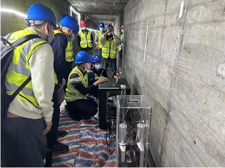
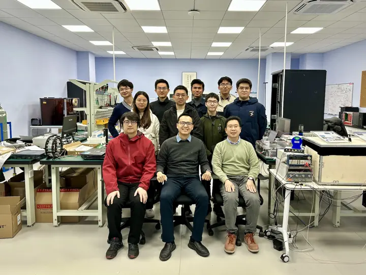

越江隧道覆土与淤积River-tunnel overburden
持续测量隧道顶部的水体与泥沙，掌握冲刷与淤积变化。Track water and sediment above the roof to follow scour and deposition.
上海交通大学李政道研究所 · 缪子成像技术转化From the Tsung-Dao Lee Institute, Shanghai Jiao Tong University
宇宙射线缪子每时每刻穿过地层。我们把它变成大体积致密结构的“内窥镜”：不钻孔、不停运、无放射源，7×24 小时报告结构内部的变化。Cosmic-ray muons pass through the ground every second. We turn them into an endoscope for large, dense structures: no drilling, no closures, no radioactive source, reporting what changes inside around the clock.
01我们解决的问题The problem
隧道、大坝与地下空间在老化，内部的劣化却看不见。业主只能在破坏性检测和“盲目期待”之间二选一。缪子成像给出第三种选择。Tunnels, dams and underground space are ageing, and the damage inside is invisible. Owners choose between destructive testing and hoping for the best. Muography offers a third option.
测得慢不是缺点：它让一次性快照，变成一条持续的健康曲线。Slow is a feature: it turns a one-off snapshot into a continuous health record.
| 缪子成像Muography | 钻孔取样Boreholes | 探地雷达Ground radar | 水面声呐Surface sonar | |
|---|---|---|---|---|
| 探测深度Depth | 数米至数百米Metres to hundreds of metres | 取决于钻深As deep as drilled | 通常数米以内Usually a few metres | 仅水底表面Riverbed surface only |
| 对结构Structure | 完全无损No contact | 需打孔Drilling | 无损No contact | 无损No contact |
| 对运营Operations | 不停运，静默运行No closures | 需占道或封闭Closures | 需短时占道Short closures | 需协调航道Waterway permits |
| 连续监测Continuous | 7×24 | 一次性One-off | 定期巡检Periodic | 定期巡检Periodic |
| 辐射源Source | 无，使用天然缪子None, natural muons | 无None | 无None | 无None |
各方法适用条件不同，选型请结合现场评估。Each method suits different conditions; choose after a site assessment.
02解决方案Solutions
隧道与地铁已完成现场部署。其他场景先做模拟评估，再开展试点。Tunnels and metro are deployed in the field. For other settings we start with simulation, then a pilot.
持续测量隧道顶部的水体与泥沙，掌握冲刷与淤积变化。Track water and sediment above the roof to follow scour and deposition.
对上方覆土成像，发现密度异常与潜在空洞，如同腹部 CT。Image the cover to find density anomalies and voids, like an abdominal CT.
在既有通道内部署，不影响运营即可了解周边地层。Deploy inside existing passages without interrupting service.
评估坝体内部密度，如同心脏造影，辅助隐患排查。Assess density inside the dam body, like a cardiac angiogram.
从巷道或井下绘制上方岩体密度，圈定高密度区域。Map rock density from adits or boreholes to outline high-density zones.
不触碰文物，探查内部空腔与结构。Look for cavities and structure without touching the site.
03项目案例Deployments
外环隧道越江段的先导实验中，江水每涨一米，到达探测器的缪子就少约 4%。系统足够灵敏，可以追踪隧道上方质量的变化，而隧道全程正常通车。In the Outer Ring Tunnel pilot, each metre of rising tide removed about 4% of the muons reaching the detector. The system tracks changes in mass above the tunnel while traffic keeps flowing.

按论文报道的约 4%/m 斜率绘制的示意，非逐点实测数据。Drawn from the reported ~4%/m slope; not point-by-point data. Source: Khaw et al., J. Appl. Phys. 138, 114902 (2025).
黄浦江底先导实验，验证潮位与泥沙覆盖的响应，成果发表于 J. Appl. Phys.。Pilot under the Huangpu; flux tracks tide and sediment. Published in J. Appl. Phys.
已完成Completed在一期基础上扩展的长期监测部署。Extended long-term monitoring building on phase 1.
已部署Deployed在轨道交通工程中开展的缪子测量部署。Muon measurements deployed on a rail-transit project.
已部署Deployed首个“成像级”部署，对隧道上方覆土进行密度成像。Our first imaging-grade deployment: density imaging of the tunnel cover.
已部署Deployed
04核心技术Technology
我们不采购国外整机。探测器、读出电子学、模拟与重建算法均为团队自研，可按场地定制，满足国产化与数据安全要求。We do not resell foreign systems. Detectors, readout, simulation and reconstruction are our own, customised per site and suited to domestic-supply and data-security requirements.
05合作方式How we work
在您投入设备和工期之前，我们先用模拟回答“能不能测”。可一次性成像，也可签约长期监测服务。Before you commit equipment or schedule, simulation answers whether it can be measured. Choose a one-off survey or a long-term monitoring service.
明确目标、场地条件与图纸。Agree the question, site and drawings.
Geant4 建模，给出能测什么、要测多久。Geant4 model: what is measurable, how long.
夜间窗口安装，不影响运营。Installed in night windows, no disruption.
在线查看通量、密度与变化趋势。Flux, density and trends online.
结论、不确定度与建议，可提交主管单位。Findings, uncertainty and advice for your authority.
06可行性速算Feasibility check
输入目标上方的厚度与材料，以及想识别的变化幅度，工具会估算一块探测器的测量时间。Enter the thickness and material above your target and the change you want to see; the tool estimates the measuring time for one detector.
通量的相对变化。参考：越江隧道潮位变化 1 m 约为 4%。Relative change in flux. Reference: 1 m of tide in the river tunnel ≈ 4%.
粗估：地表 30° 内通量约 50 个/m²·s；dE/dX = a + bE（a ≈ 0.25 GeV/m.w.e.，b ≈ 4×10⁻⁴ /m.w.e.）；所需计数 N = (3/δ)²。未计效率、角分布与本底，正式方案以模拟为准。Rough model: ~50 muons/m²·s within 30° at surface; dE/dX = a + bE (a ≈ 0.25 GeV/m.w.e., b ≈ 4×10⁻⁴ /m.w.e.); required counts N = (3/δ)². Ignores efficiency, angles and background; formal plans follow simulation.
07投资者关系For investors
成千上万座老化的隧道与大坝，只能在破坏性检测和盲目期待之间选择。我们把顶尖实验室的粒子探测能力，转化为可规模化交付的基础设施服务。Thousands of ageing tunnels and dams left choosing between destructive testing and blind hope. We turn frontier particle-detection skills into an infrastructure service that scales.
上海四处工程部署、同行评审论文与工信部 2024 年典型案例，而不只是实验室原型。Four Shanghai deployments, a peer-reviewed paper and an MIIT 2024 typical case, not just a lab prototype.
全链条自研、自主知识产权，为国内基础设施提供可控的选择。Fully in-house with our own IP, a controllable option for domestic infrastructure.
科教套件带来近期现金流，工业监测数据服务（DaaS）带来长期增长。STEM education kits for near-term cash flow; industrial monitoring-as-a-service for long-term growth.
依托马来西亚的高校与商会网络，布局喀斯特地质、矿业与文化遗产市场。Using university and chamber-of-commerce ties in Malaysia to reach karst geology, mining and heritage markets.
08加入我们Careers
在这里，你做的探测器会装进真实的隧道，你写的算法会回答业主的真实问题。团队来自中国、马来西亚及世界各地。Here, the detector you build goes into a real tunnel and the code you write answers a real owner's question. Our team comes from China, Malaysia and around the world.

闪烁体、SiPM 与读出电子学的设计、装配与测试。Design, build and test scintillator, SiPM and readout systems.
模拟、三维重建与机器学习反演。Simulation, 3D reconstruction and ML-based inversion.
隧道与工地的部署、运维与数据质量。Deployment, upkeep and data quality on tunnels and sites.
对接业主、设计院与海外市场。Work with owners, design institutes and overseas markets.
也欢迎博士后、研究生与本科科研实习生，通过李政道研究所缪子物理课题组加入。Postdocs, graduate students and undergraduate interns can join through the TDLI Muon Physics Group. kimsiang.github.io ↗
09创始人Founder
创始人 · 首席科学家Founder · Chief Scientist
上海交通大学李政道研究所长聘副教授、缪子物理课题组负责人，参与费米实验室 Muon g−2 与 PSI 缪子电偶极矩实验。奇绩创坛 Fellow。Tenured Associate Professor at the Tsung-Dao Lee Institute, SJTU, leading the Muon Physics Group, with work on Fermilab's Muon g−2 and the muon EDM search at PSI. MiraclePlus Fellow.
FAQ常见问题Questions
缪子能穿透数百米岩石，深度很少是限制，真正的限制是时间：越深，到达的缪子越少，测量越久。可行性速算可以给您一个量级。Muons pass through hundreds of metres of rock, so depth is rarely the limit. Time is: deeper targets receive fewer muons. The feasibility tool gives the order of magnitude.
分辨率取决于探测器角分辨率、与目标的距离和测量时长。可行性报告会给出具体数值。It depends on angular resolution, distance and measurement time. The feasibility report gives concrete numbers.
没有额外辐射。我们只接收天然宇宙射线缪子，设备不发射射线，也无需放射源许可。No. We only receive natural cosmic-ray muons; the equipment emits nothing and needs no source licence.
不会。设备装在检修通道或设备间，静默运行，只需供电和网络。No. Equipment sits in service corridors, runs silently and needs only power and network.
10联系我们Contact
项目合作、投资交流或加入团队，都可以从这里开始。页面会生成一份摘要，复制后通过邮件或公众号发给我们。Projects, investment or joining the team all start here. The page builds a summary; copy it and send it by email or WeChat.